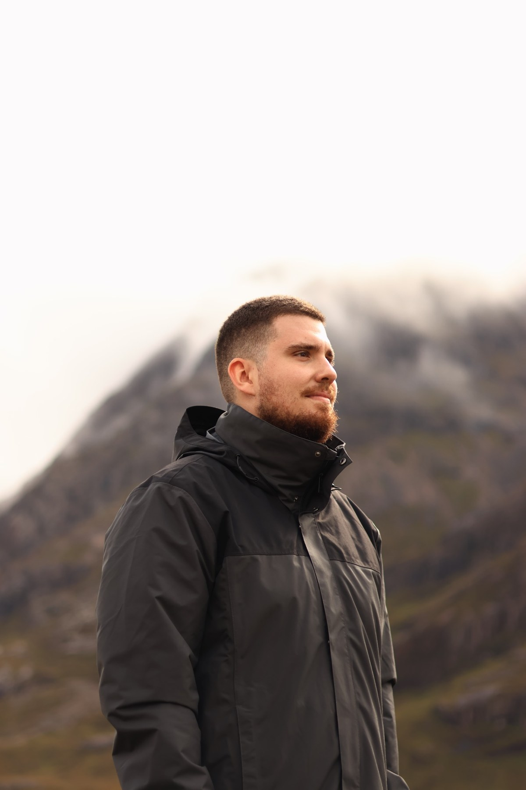

Cinemático
Luz, profundidad, paisaje y composición al servicio de la historia.
Fotografía cinematográfica de parejas · Madrid

Detrás de Fated Visuals
Trabajo en el mundo audiovisual, y eso ha marcado mucho mi forma de mirar una imagen. Me fijo especialmente en la luz, el color, la composición y en cómo una escena puede contar algo por sí sola.
Fated Visuals nace de llevar esa forma de mirar a la fotografía de parejas. Me gustan las fotos naturales, con atmósfera y un punto cinematográfico, aprovechando la luz y el entorno para que cada sesión tenga su propia personalidad.
Luz, profundidad, paisaje y composición al servicio de la historia.
Gestos reales, proximidad y momentos que no necesitan ser forzados.
Madrid y alrededores como escenario: sierra, campo, bosque y ciudad.
Una primera selección de imágenes. El portfolio irá creciendo con nuevas sesiones y, sobre todo, con más historias de pareja.
“Stories meant to be.”
Si quieres una sesión de pareja con una estética natural y cinematográfica, cuéntame vuestra idea.